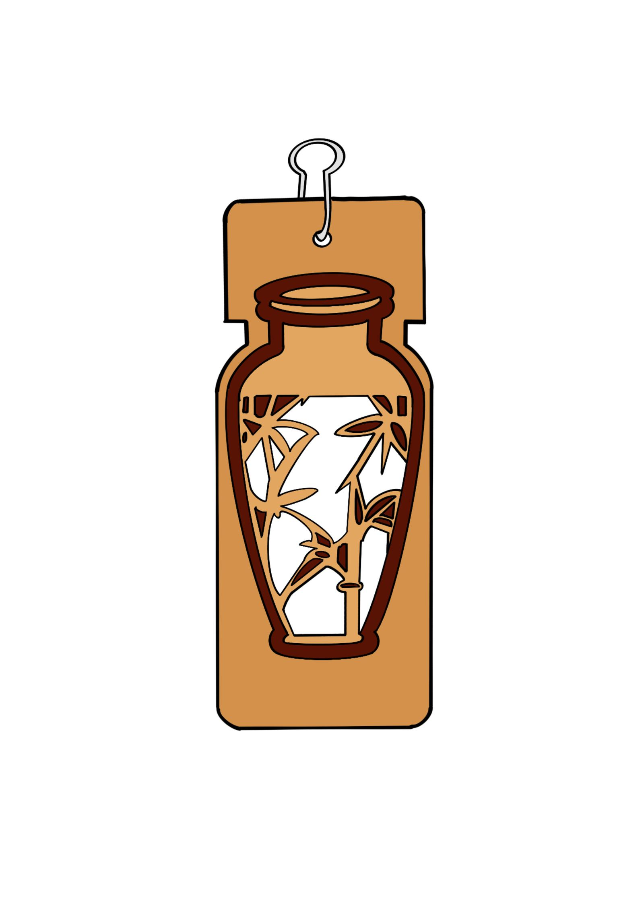
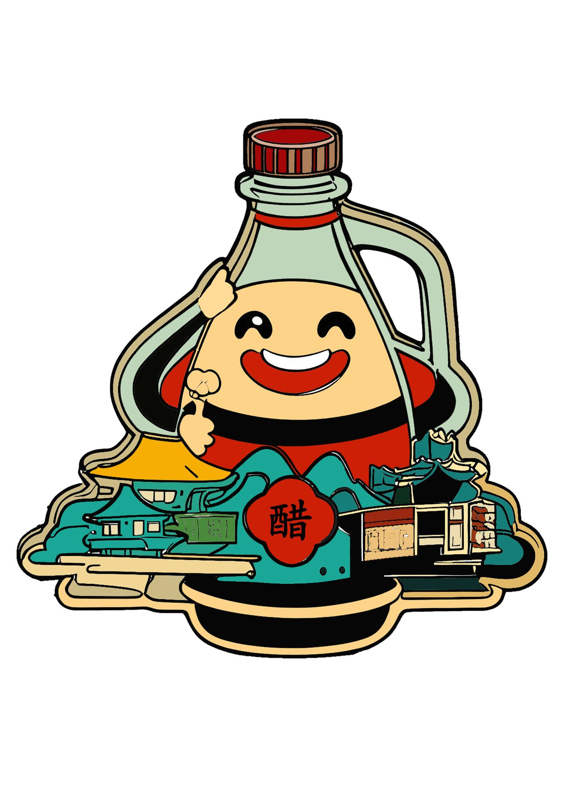
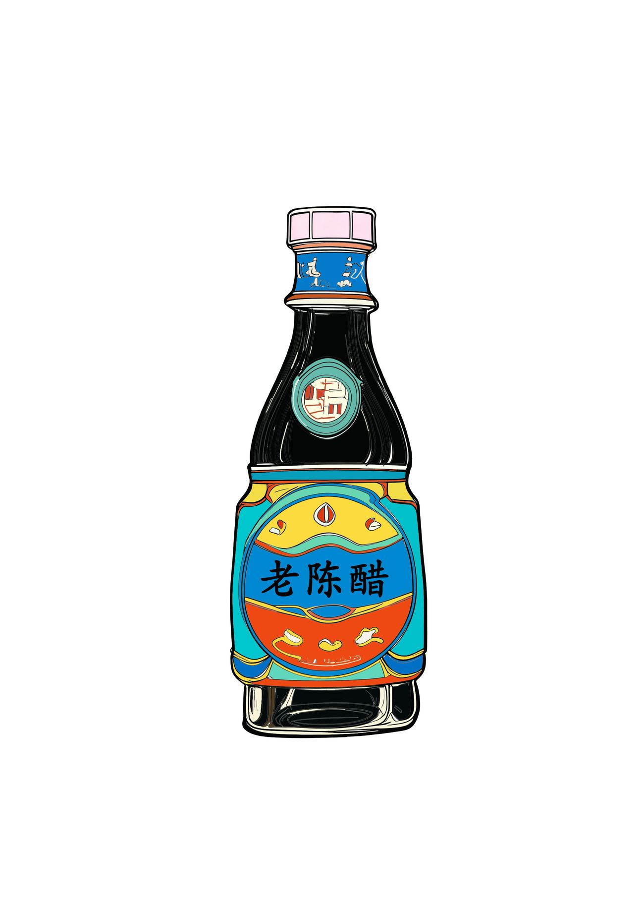
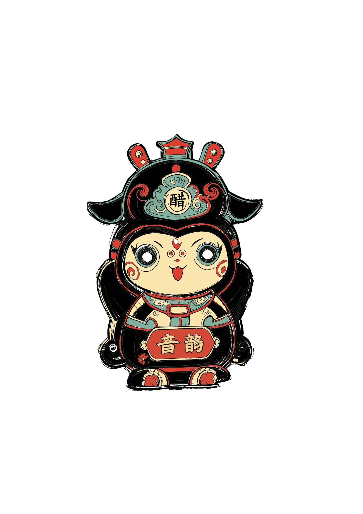
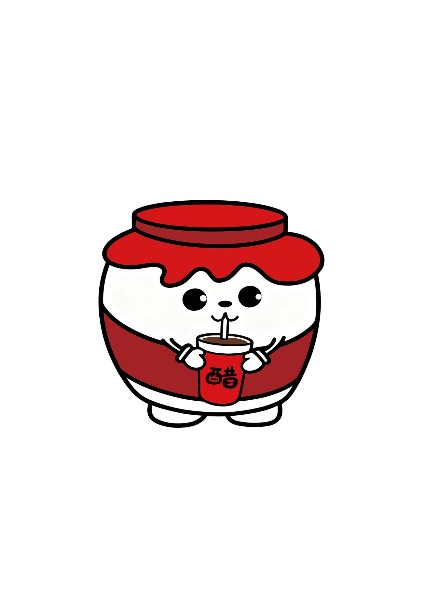
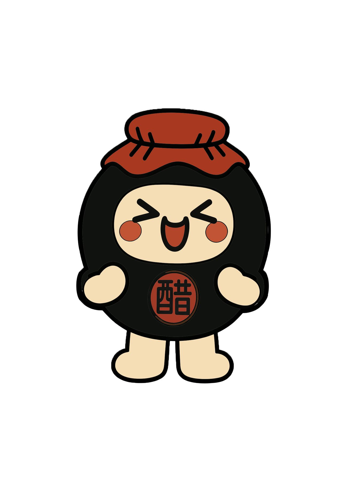
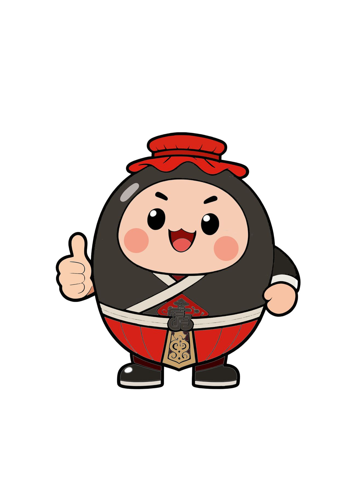
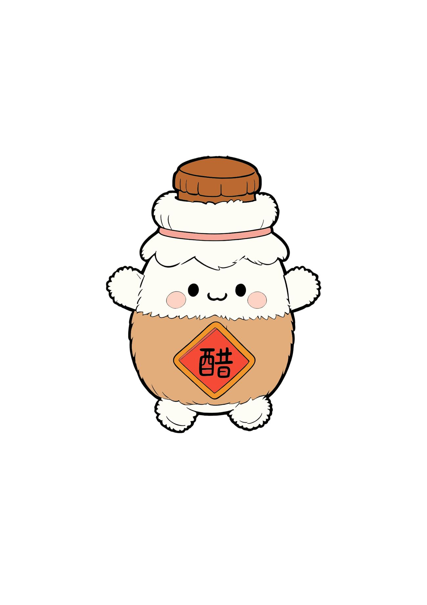

05 — 文创设计 · 插画Cultural IP · Illustration
山西老陈醋
文创形象设计
Shanxi Aged Vinegar
Cultural IP
为山西老陈醋设计的一组卡通 IP 形象：以醋坛、醋瓶、醋罐为原型，衍生出十个角色与配套包装效果图。 A cast of cartoon characters for Shanxi aged vinegar, built from crocks, bottles and jars — ten characters with packaging mock-ups.

Year
2025
Role
主创设计Designer
Client
课程课题 · 山西文创
Scope
形象设定 · 比例与描边规范 · 角色延展 · 包装效果图Character Design · Line & Proportion System · Extensions · Mock-ups
01 / 背景Context
调味品货架之外Beyond the condiment shelf
老陈醋是山西最有辨识度的物产之一，但传统包装语言停留在调味品货架的逻辑里——强调产地、年份与工艺，缺少面向年轻人的表达。 Aged vinegar is one of Shanxi's most recognisable products, but its packaging language stays inside the logic of a condiment shelf — origin, vintage and craft — with little room for a younger audience.
02 / 策略Strategy
把「酸」变成性格Making sourness a personality
核心动作是把「酸」这一味觉特征转化为角色的性格：圆润的坛身、夸张的表情、微微前倾的姿态，让器物本身成为主角，而不只是被拟人化的商品。 The central move is to turn sourness — a taste — into personality: rounded crock bodies, exaggerated expressions, a slight forward lean, so the vessel itself becomes the protagonist rather than an anthropomorphised product.
不添加与醋无关的元素——所有角色的身体都直接来自真实的醋器形制。 Nothing unrelated to vinegar is added — every character's body comes directly from a real vinegar vessel.
03 / 执行Execution
先立规范，再放表情System first, expressions second
先完成形象草图与比例设定，再统一描边粗细、主色与辅助色，最后建立表情系统，让十个角色可以在同一套规则下继续扩展。 Character sketches and proportions came first, then a unified stroke weight and a primary/secondary palette, and finally an expression system so the ten characters can keep extending under one rule set.
形象完成后应用到礼盒、手提袋与陈列效果图，验证角色在真实包装上的辨识度。 The finished characters were applied to gift boxes, carriers and mock-ups to verify they still read on real packaging.
04 / 成果Outcome
十个角色，一套规则Ten characters, one rule set
交付十个卡通角色形象、表情与比例规范，以及配套的包装效果图与草图过程。 Ten cartoon characters delivered with expression and proportion standards, plus packaging mock-ups and the sketch process.
品牌色彩Colour System
作品呈现Visuals






